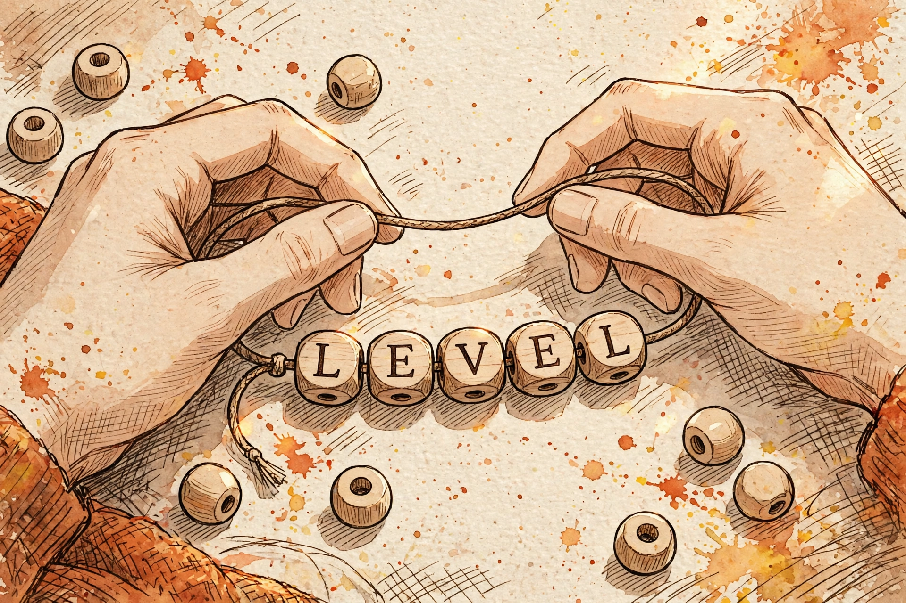

Tuesday, September 29, 2026
A Python string is an array you are not allowed to change — an immutable row of Unicode code points. Every "edit" is secretly a rebuild: this lesson prices the rebuilds, then lets symmetry do the work — two pointers for palindromes, expand-around-center for the longest one.

Builds on: L1 (Arrays: The Foundation) — the exact idea reused
is the contiguity bargain: indexing is arithmetic (base + i × w), so
s[i] is Θ(1); changing the middle means shifting everything after it, so it costs
Θ(n−k). A string inherits every line of that cost table. What changes today is one new rule
layered on top: immutability.
Picture a cord threaded with wooden letter beads — except the cord is glued shut. You cannot
remove a bead, swap one, or squeeze a new bead into the middle. To change a single letter you must
cut the cord and restring the whole thing. That is s[:i] + new + s[i+1:]:
three fresh copies just to change one character. Every string "edit" in Python pays this restring
tax. The interview-level insight: L1 taught you the middle of an array costs Θ(n) to change.
Immutability means the end costs Θ(n) too — s + "x" copies all of s.
One more layer: a "character" is actually three different things. The grapheme
is what a human sees. The code point is the Unicode number for it — and it is
what Python counts: len(s) counts code points, not graphemes. The
bytes are the UTF-8 encoding, one to four bytes wide. In interviews the input is
effectively ASCII and this stays in your pocket — but the moment someone asks why
len() says 2 for something that looks like one character, the three-layer answer is
the answer.
Immutability is not a handicap; it is a design choice. Strings are hashable (that's why they can be dict keys — L5 needs this), shareable across threads without locks, and safe to slice-and-share internally. You pay for that safety at edit time. The rest of the lesson is knowing exactly where.
Two derivations. First, s += c in a loop — the Schlemiel the Painter problem. The
k-th append copies the whole k−1-character string plus the new char: k units of work. Over n
appends the total is 1 + 2 + … + n = n(n+1)/2 = Θ(n²). Now "".join(parts): build a
list of parts (Θ(n) total characters), then one pass writes each character once: Θ(n). Worked
numbers for n = 10,000: the += loop does roughly 50 million character copies; join
does 10,000. "Build a string from n pieces" is not a warm-up — it is the question, and
it is asking whether you know this derivation.
Second, the longest-palindrome math. Brute force: there are Θ(n²) substrings and each palindrome check costs O(n) — that's Θ(n³). Expand-around-center: every palindrome has a center, and there are 2n−1 of them (n characters plus n−1 gaps). Expanding from each center costs O(n), so total O(n²) time in O(1) space. One whole order of magnitude bought by symmetry alone. (Manacher's O(n) algorithm exists and is baroque; interviewers don't expect it. Know its name, not its code.)
| Operation | Cost | Why |
|---|---|---|
Index s[i] | Θ(1) | same address arithmetic as L1 |
len(s) | Θ(1) | length is cached, not counted |
Slice s[i:j] | Θ(j−i) | it copies — the L7 trap in string form |
Concatenate s + t | Θ(n+m) | builds a brand-new string |
s += c in a loop | Θ(n²) total | sum 1..n — Schlemiel |
"".join(parts) | Θ(n) | one allocation, one pass |
x in s | Θ(n) | naive scan under the hood |
| Naive substring search | Θ(n·m) | up to m chars at each of n positions — KMP fixes this (L43) |
Two problems carry the string interviews. First, the valid palindrome — L1's read pointers, now walking from both ends toward the middle (the seed of L13, two pointers):
def is_palindrome(s):
# Two pointers converge from both ends.
# Invariant: everything outside [left, right] has been checked
# and matched. Each char is visited at most once -> Theta(n)
# time, O(1) extra space. L1's read-pointer idea, mirrored.
left, right = 0, len(s) - 1
while left < right:
if not s[left].isalnum(): # skip the noise
left += 1
continue
if not s[right].isalnum():
right -= 1
continue
if s[left].lower() != s[right].lower():
return False
left += 1
right -= 1
return True # LC 125
Second, the longest palindromic substring — expand around the center instead of enumerating substrings:
def longest_palindrome(s):
# Every palindrome has a center: 2n-1 of them
# (n chars + n-1 gaps). Expand from each as far as the
# symmetry holds; keep the longest. 2n-1 centers x O(n)
# per expansion = O(n^2) time, O(1) extra space.
# Brute force is Theta(n^3): symmetry bought an order.
def expand(l, r):
while l >= 0 and r < len(s) and s[l] == s[r]:
l -= 1
r += 1
return r - l - 1 # span of the found palindrome
start, best = 0, 0
for i in range(len(s)):
length = max(expand(i, i), # odd: center on char i
expand(i, i + 1)) # even: center between i, i+1
if length > best:
best = length
start = i - (length - 1) // 2
return s[start:start + best] # LC 5
"".join once. The += trap is the #1 string
performance question."".join at the end (reverse-string, LC 344, is this in disguise).+= in a loop is Θ(n²) — Schlemiel the Painter: each append
restrings the cord. Collect in a list, join once.s.lower() alone does
nothing; you must reassign. The mutation never happens — that's the point of immutability, and
it bites exactly once before you never forget it.s[i:j] is Θ(j−i); inside a loop over n
positions it's a hidden quadratic — the L7 trap wearing a string costume.s[-1] is the last char, not an
error. In a two-pointer loop a pointer that overshoots wraps silently to the wrong end.r - l - 1 falls out
of where the failing indices land.len() counts code points, not graphemes — one visible character
can be several code points. In interviews assume ASCII; in production, remember the three
layers.Connects to: L13 (Two pointers — today's converging walk becomes a full technique), L14 (Sliding window — longest substring without repeating characters, LC 3), L5/L6 (Hash maps & frequency — anagrams are counting, not comparing), L31 (Tries — when you have many strings, not one), L43 (String matching — KMP and the O(n+m) substring search), L7 (the complexity vocabulary you just used to price every rebuild).
See the full presentation:
Strings: The Array's Tricky Sibling — Letter brief
Deep dive: Strings — study guide
(mechanism diagrams, the Schlemiel math, pattern-spotting, self-test, references)
— The Infra Notebook